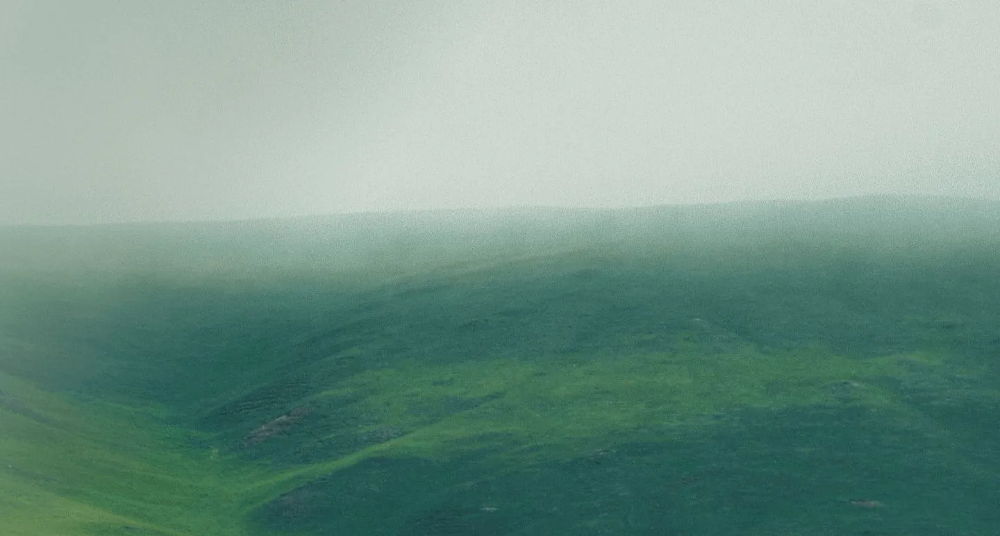
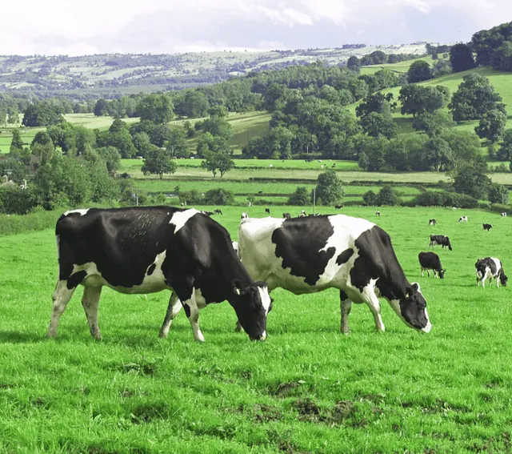
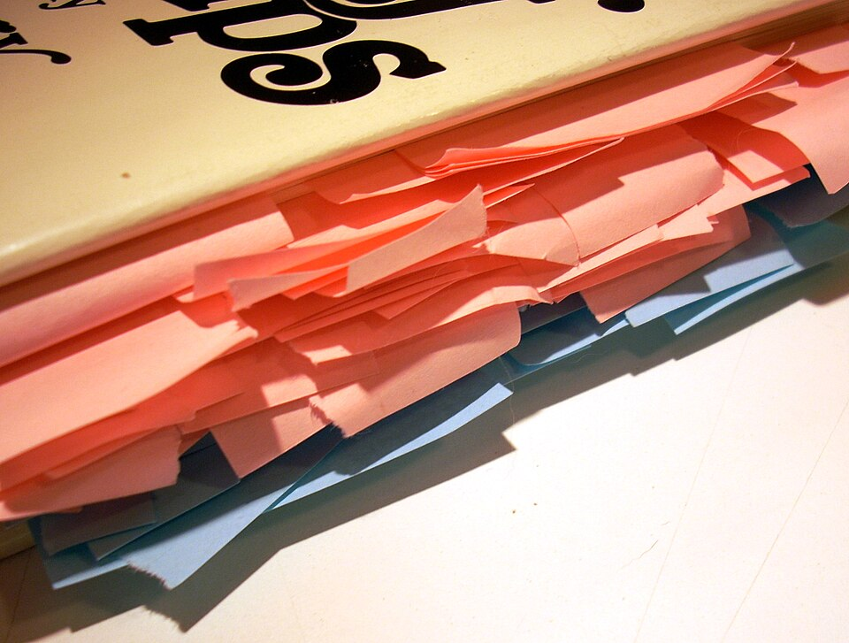

Client case: a globally leading dairy group
In 2020, I worked on the HR operating-model transformation of a globally leading dairy group: assessing the existing three-pillar model, designing the future model and building a three-year implementation roadmap.
- Project start
- 2020
- Organisation design
- 6 months
- Roadmap
- 3 years

Client profile
The client is a globally leading dairy group whose portfolio spans liquid milk, milk powder, yoghurt, ice cream and other categories, supported by global research, supply-chain and market operations.
The scale and complexity of the organisation make the HR operating model central to supporting growth. The client is anonymised in line with disclosure boundaries; this case focuses on the approach and the work I led.
- Client type
- Global dairy group
- Portfolio
- Multi-category
- Organisation
- Global footprint

Project context
In 2020, the client's business entered a period of transformation. An initial three-pillar HR model was in place, but the group needed to serve the business more efficiently and with greater professional depth.
The central challenge was to improve HR efficiency and effectiveness, while clarifying how HRBPs, Centres of Excellence and shared services should work together in the new business environment.

HR solution
Diagnosis, operating-model design, benchmarking and a practical route to implementation.
-
01
Diagnose the current HR operating model
Review the three pillars' responsibilities, processes, service interfaces and delivery constraints.
-
02
Analyse how the HR team works
Assess time allocation, capability structure and the technology used in day-to-day work.
-
03
Design the future operating model
Set the target model, organisational responsibilities, service tiers and collaboration mechanisms.
-
04
Benchmark and assess return on investment
Compare leading practices and evaluate the investment, benefits and priorities for a shared-service centre.

Client outcomes
- Organisation and governance modelDesign completed within six months6 months
- Transformation roadmapA three-year implementation sequence3 years
- Capability developmentBuilding the skills the new model requiresCapability
- HRBP and CoE enablementTraining to support implementationTraining

Project site
Project materials and workshop fragments.